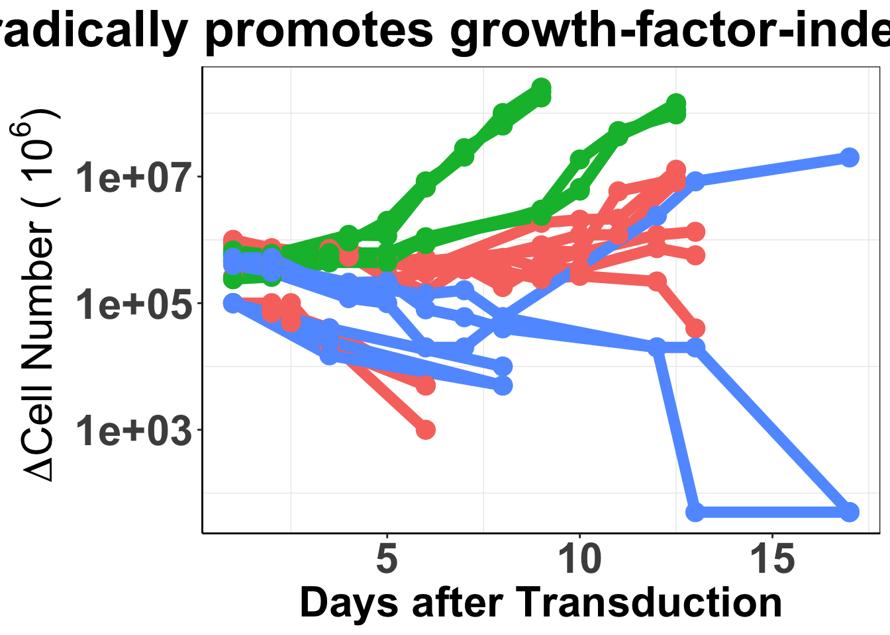
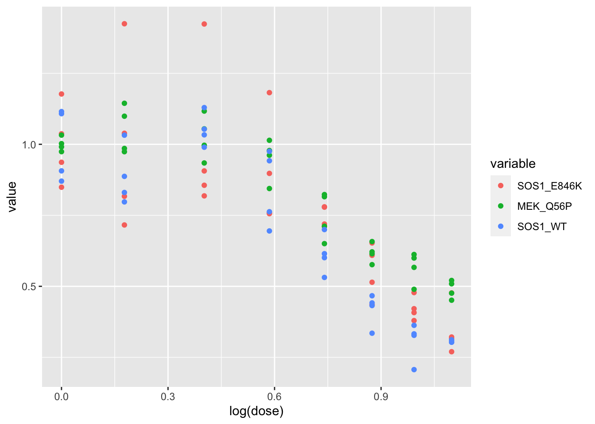

baf3_alkati_transformations
Haider Inam
3/4/2019
Last updated: 2021-03-21
Checks: 7 0
Knit directory: ~/Box/RProjects/pair_con_select/
This reproducible R Markdown analysis was created with workflowr (version 1.6.2). The Checks tab describes the reproducibility checks that were applied when the results were created. The Past versions tab lists the development history.
Great! Since the R Markdown file has been committed to the Git repository, you know the exact version of the code that produced these results.
Great job! The global environment was empty. Objects defined in the global environment can affect the analysis in your R Markdown file in unknown ways. For reproduciblity it’s best to always run the code in an empty environment.
The command set.seed(20190211) was run prior to running the code in the R Markdown file. Setting a seed ensures that any results that rely on randomness, e.g. subsampling or permutations, are reproducible.
Great job! Recording the operating system, R version, and package versions is critical for reproducibility.
Nice! There were no cached chunks for this analysis, so you can be confident that you successfully produced the results during this run.
Great job! Using relative paths to the files within your workflowr project makes it easier to run your code on other machines.
Great! You are using Git for version control. Tracking code development and connecting the code version to the results is critical for reproducibility.
The results in this page were generated with repository version c4277ef. See the Past versions tab to see a history of the changes made to the R Markdown and HTML files.
Note that you need to be careful to ensure that all relevant files for the analysis have been committed to Git prior to generating the results (you can use wflow_publish or wflow_git_commit). workflowr only checks the R Markdown file, but you know if there are other scripts or data files that it depends on. Below is the status of the Git repository when the results were generated:
Ignored files:
Ignored: .Rhistory
Ignored: .Rproj.user/
Ignored: analysis/.RData
Ignored: analysis/.Rhistory
Ignored: analysis/.Rproj.user/
Ignored: data/skmel28_sos1_mekq56p_vemurafenib.csv.sb-ea24b981-dvFz4V/
Untracked files:
Untracked: analysis/ForYiyun.csv
Untracked: analysis/alk_luad_mutation_bias.Rmd
Untracked: analysis/alkati_crizotinib_ic50s.Rmd
Untracked: analysis/analysis.Rproj
Untracked: analysis/baf3_alkati_brig.pdf
Untracked: analysis/baf3_alkati_criz.pdf
Untracked: analysis/ks_results_forshiny.csv
Untracked: baf3_alkati_brig.pdf
Untracked: code/alldata_compiler.R
Untracked: code/contab_maker.R
Untracked: code/mut_excl_genes_datapoints.R
Untracked: code/mut_excl_genes_generator.R
Untracked: code/quadratic_solver.R
Untracked: code/shinyfunc.R
Untracked: code/simresults_generator.R
Untracked: data/ALKATI_ccle.csv
Untracked: data/All_Data_V2.csv
Untracked: data/CCLE_NP24.2009_Drug_data_2015.02.24.csv
Untracked: data/alkati_baf3_ic50s_heatmap.csv
Untracked: data/alkati_growthcurvedata.csv
Untracked: data/alkati_growthcurvedata_f1174mutants_raw.xlsx
Untracked: data/alkati_growthcurvedata_popdoublings.csv
Untracked: data/alkati_growthcurvedata_popdoublings_f1174mutants.csv
Untracked: data/alkati_melanoma_vemurafenib_figure_data.csv
Untracked: data/alkati_simulations_compiled_1000_12319.csv
Untracked: data/all_data.csv
Untracked: data/skmel28_sos1_mekq56p_vemurafenib.csv
Untracked: data/tcga_brca_expression/
Untracked: data/tcga_luad_expression/
Untracked: data/tcga_skcm_expression/
Untracked: output/ alkati_subsamplesize_orval_fig1c.pdf
Untracked: output/alkati_ccle_tae684_plot.pdf
Untracked: output/alkati_filtercutoff_allfilters.csv
Untracked: output/alkati_luad_exonimbalance.pdf
Untracked: output/alkati_mtn_pval_fig2B.pdf
Untracked: output/alkati_skcm_exonimbalance.pdf
Untracked: output/alkati_subsamplesize_pval_fig.pdf
Untracked: output/alkati_subsamplesize_pval_fig1c.pdf
Untracked: output/all_data_luad.csv
Untracked: output/all_data_luad_egfr.csv
Untracked: output/all_data_skcm.csv
Untracked: output/baf3_alkati_figure_deltaadjusted_doublings.pdf
Untracked: output/baf3_alkati_figure_deltaadjusted_doublings_updated.pdf
Untracked: output/baf3_barplot.pdf
Untracked: output/baf3_elisa_barplot.pdf
Untracked: output/baf3_f1174_figure_deltaadjusted_doublings.pdf
Untracked: output/egfr_luad_exonimbalance.pdf
Untracked: output/fig1c_3719_4.pdf
Untracked: output/fig1c_52219.pdf
Untracked: output/fig2b2_filtercutoff_atinras_totalalk.pdf
Untracked: output/fig2b_filtercutoff_atibraf.pdf
Untracked: output/fig2b_filtercutoff_atinras.pdf
Untracked: output/luad_alk_exon_expression.csv
Untracked: output/luad_egfr_exon_expression.csv
Untracked: output/melanoma_vemurafenib_fig.pdf
Untracked: output/melanoma_vemurafenib_fig_bottom.pdf
Untracked: output/melanoma_vemurafenib_fig_top.pdf
Untracked: output/skcm_alk_exon_expression.csv
Untracked: output/suppfig1..pdf
Untracked: output/suppfig1_52219.pdf
Untracked: shinyapp/
Untracked: suppfig1..pdf
Unstaged changes:
Modified: analysis/ALKATI_Filter_Cutoff_Analysis.Rmd
Modified: analysis/ALK_ExonImbalance_SKCM_Analysis.Rmd
Modified: analysis/TCGA_luad_data_parser.Rmd
Modified: analysis/alkati_cell_line_tae684_response.Rmd
Modified: analysis/index.Rmd
Modified: analysis/pairwise_comparisons_conditional_selection_simulated_cohorts.Rmd
Deleted: analysis/practice.Rmd
Modified: analysis/tcga_luad_data_parser_egfr.Rmd
Note that any generated files, e.g. HTML, png, CSS, etc., are not included in this status report because it is ok for generated content to have uncommitted changes.
These are the previous versions of the repository in which changes were made to the R Markdown (analysis/baf3_alkati_transformations.Rmd) and HTML (docs/baf3_alkati_transformations.html) files. If you’ve configured a remote Git repository (see ?wflow_git_remote), click on the hyperlinks in the table below to view the files as they were in that past version.
| File | Version | Author | Date | Message |
|---|---|---|---|---|
| Rmd | c4277ef | haiderinam | 2021-03-21 | wflow_publish(“analysis/baf3_alkati_transformations.Rmd”) |
| html | 6744c50 | haiderinam | 2019-03-06 | Build site. |
| Rmd | b7d812d | haiderinam | 2019-03-06 | Published Fig 4 analysis analysis, added statistical test for fig 3 & 4 |
library(reshape2)
library(ggsignif)
library(ggplot2)Warning: package 'ggplot2' was built under R version 4.0.2library(knitr)
library(dplyr)
Attaching package: 'dplyr'The following objects are masked from 'package:stats':
filter, lagThe following objects are masked from 'package:base':
intersect, setdiff, setequal, unionlibrary(tictoc)
library(foreach)
library(doParallel)Loading required package: iteratorsLoading required package: parallelsource("code/alldata_compiler.R")
source("code/contab_maker.R")
######################Cleanup for GGPlot2#########################################
cleanup=theme_bw() +
theme(plot.title = element_text(hjust=.5),
panel.grid.major = element_blank(),
panel.grid.major.y = element_blank(),
panel.background = element_blank(),
# axis.line = element_line(color = "black"),
axis.text = element_text(face="bold",color="black",size="11"),
text=element_text(size=11,face="bold"),
axis.title=element_text(face="bold",size="11"))
# rm(list=ls())##ALKATI does not seem to be sufficient to make Baf3s growth factor independent ###Displaying the population doublings of ALKATI, EML4ALK, and Vector over time ####Please not that while we performed a total of 48 ALKATI transductions, we only counted the first 9 transductions.
library(ggplot2)
library(reshape2)
library(Hmisc)Warning: package 'Hmisc' was built under R version 4.0.2Loading required package: latticeLoading required package: survivalLoading required package: FormulaWarning: package 'Formula' was built under R version 4.0.2
Attaching package: 'Hmisc'The following objects are masked from 'package:dplyr':
src, summarizeThe following objects are masked from 'package:base':
format.pval, unitscleanup=theme_bw() +
theme(plot.title = element_text(hjust=.5),
panel.grid.major = element_blank(),
panel.grid.major.y = element_blank(),
panel.background = element_blank(),
axis.line = element_line(color = "black"))
# setwd("../Box/AlkAti/figures/baf3transformationsfigure/")
baf3data=read.table("data/alkati_growthcurvedata_popdoublings.csv",header=T,stringsAsFactors = F,sep = ",")
###Removing 7th march data because the cells grew a lot in the first day post selection
baf3data=baf3data[!grepl("7-Mar",baf3data$Infection),]
baf3data=baf3data[,c(1:11)]
###If you want only eml4alk and alk ati data, do this:
# baf3data=baf3data[,c(1:8)]
#
baf3data2=melt(baf3data,id.vars = c("Time","Infection"),variable.name ="infnum" ,value.name = "doublings")
baf3data2=baf3data2 %>%
filter(doublings>=-10)
baf3data2=na.omit(baf3data2)
baf3data2$infnum=as.character(baf3data2$infnum)
###Transforming counts into actual numbers because these counts represent x1000s
# baf3data2$value=baf3data2$value*1000
###Creating a boolean for Type of infection
baf3data2$type="EML4ALK"
baf3data2$type[grep("alkati",baf3data2$infnum,ignore.case = T)]="ALKATI"
baf3data2$type[grep("vector",baf3data2$infnum,ignore.case = T)]="VECTOR"
#
#
ggplot(baf3data2,aes(x=Time,y=doublings,color=type,fill=Infection,shape=infnum))+
geom_line(size=1)+
geom_point(size=2,shape=16)+
# scale_y_continuous(limits = c(1,1e8))+
xlab("Days after Transduction")+
ylab("Number of Cell Doublings")+
cleanup+
theme(plot.title = element_text(hjust=.5),
text = element_text(size=11,face = "bold"),
axis.title = element_text(face="bold",size="11"),
axis.text=element_text(face="bold",color="black",size="11"))+
theme(legend.position="none")+
xlim(0,14)+
scale_colour_brewer(palette="Set2")Warning: The shape palette can deal with a maximum of 6 discrete values because
more than 6 becomes difficult to discriminate; you have 9. Consider
specifying shapes manually if you must have them.Warning: Removed 1 row(s) containing missing values (geom_path).Warning: Removed 1 rows containing missing values (geom_point).
| Version | Author | Date |
|---|---|---|
| 6744c50 | haiderinam | 2019-03-06 |
#Can also make your own palette and color manually. Obtained from http://www.cookbook-r.com/Graphs/Colors_(ggplot2)/
ggsave("output/baf3_alkati_figure_deltaadjusted_doublings.pdf",width = 3, height = 2.25, units = "in",useDingbats=F)Warning: The shape palette can deal with a maximum of 6 discrete values because
more than 6 becomes difficult to discriminate; you have 9. Consider
specifying shapes manually if you must have them.Warning: Removed 1 row(s) containing missing values (geom_path).Warning: Removed 1 rows containing missing values (geom_point).# Mean and standard deviation to grow out:
#Our criteria for cells "growing out" was when they reached two population doublings
#I extracted the number of days it took for ALKATI and EML4ALK samples to reach 2 population doublings by looking at the data of cells growing out.
head(baf3data2) Time Infection infnum doublings type
1 1.0 24-Nov ALKATI1 0.0000000 ALKATI
2 2.0 24-Nov ALKATI1 0.6918777 ALKATI
3 3.5 24-Nov ALKATI1 0.9142701 ALKATI
4 5.0 24-Nov ALKATI1 0.7589919 ALKATI
5 6.0 24-Nov ALKATI1 0.4694853 ALKATI
6 9.0 24-Nov ALKATI1 2.8387191 ALKATI#ALKATI grew out in 9,10, and 11 days.
mean(c(9,10,11))[1] 10sd(c(9,10,11))[1] 1#Eml4ALK grew out in 6,6,6,6,6, and 5 days
mean(c(6,6,6,6,6,10))[1] 6.666667sd(c(6,6,6,6,6,5))[1] 0.4082483###Adding data for F1174 mutants that were generated on top of plvx-ALKATI-IRES-Puro using SDM
f1174data=read.table("data/alkati_growthcurvedata_popdoublings_f1174mutants.csv",header=T,stringsAsFactors = F,sep = ",")
f1174data2=melt(f1174data,id.vars = c("Time","Replicate","Condition"),value.name = "doublings",variable.name = "CellLine")
f1174data2=f1174data2 %>%
filter(doublings>=-10)
# f1174data2=na.omit(f1174data2)
f1174data2$CellLine=as.character(f1174data2$CellLine)
f1174data2=f1174data2%>%mutate(type=case_when(
CellLine%in%c("ALKATI")~"ALKATI",
CellLine%in%c("F1174C","F1174V","F1174I")~"ALKATIMutant",
CellLine%in%c("Vector")~"VECTOR",
CellLine%in%c("EML4ALK")~"EML4ALK"
))
f1174data2=f1174data2%>%
mutate(type_forplot=case_when(type%in%"ALKATIMutant"~"ALKATI",
TRUE~type))
ggplot(f1174data2%>%filter(!Condition%in%"Growth"),aes(x=Time/24,y=doublings,color=type_forplot,fill=CellLine,shape=factor(Replicate)))+
geom_line(size=1)+
geom_point(size=2,shape=16)+cleanup+
theme(plot.title = element_text(hjust=.5),
text = element_text(size=11,face = "bold"),
axis.title = element_text(face="bold",size="11"),
axis.text=element_text(face="bold",color="black",size="11"))+
scale_x_continuous(name="Time")+
scale_y_continuous(name="Number of Cell Doublings")+
# theme(legend.position="none")+
# xlim(0,14)+
scale_colour_brewer(palette="Set2")+
xlim(0,11)+
theme(legend.position="none")Scale for 'x' is already present. Adding another scale for 'x', which will
replace the existing scale.ggsave("output/baf3_f1174_figure_deltaadjusted_doublings.pdf",width = 3, height = 2.25, units = "in",useDingbats=F)
###Combining the F1174C transformants dataframe and the Baf3 ALKATI WT transformants dataframe. Numbering the ALKATI infection numbers so that they match better with the format that I used for the BaF3 transformations last year.
f1174data2=f1174data2%>%
mutate(infnum=CellLine,
infnum=case_when(CellLine%in%"ALKATI"
&Condition%in%"IL3Sele"
&Replicate%in%1~"ALKATI4",
CellLine%in%"ALKATI"
&Condition%in%"IL3Sele"
&Replicate%in%2~"ALKATI5",
CellLine%in%"EML4ALK"
&Condition%in%"IL3Sele"
&Replicate%in%1~"Eml4Alk.4",
CellLine%in%"EML4ALK"
&Condition%in%"IL3Sele"
&Replicate%in%2~"Eml4Alk.5",
CellLine%in%"Vector"
&Condition%in%"IL3Sele"
&Replicate%in%1~"Vector4",
CellLine%in%"Vector"
&Condition%in%"IL3Sele"
&Replicate%in%2~"Vector5",
TRUE~paste(CellLine,Replicate,sep="")))
a=f1174data2%>%mutate(Time=Time/24)%>%dplyr::select(Time,Infection=CellLine,infnum,doublings,type,Condition)
baf3data2$Condition="IL3Sele"
brafdata_combined=rbind(baf3data2,a)
brafdata_combined=brafdata_combined%>%filter(!(Condition%in%"Growth"&Time>=9))
# c=brafdata_combined
# c=brafdata_combined%>%filter(!(Condition%in%"Growth" & Time>=6))
ggplot(brafdata_combined%>%filter(!type%in%"ALKATIMutant"),aes(x=Time,y=doublings,color=type,fill=Infection,shape=infnum,alpha=factor(Condition)))+
geom_line(size=1)+
geom_point(size=2,shape=16)+
# geom_point()
# scale_y_continuous(limits = c(1,1e8))+
xlab("Days after Transduction")+
ylab("Number of Cell Doublings")+
cleanup+
theme(plot.title = element_text(hjust=.5),
text = element_text(size=11,face = "bold"),
axis.title = element_text(face="bold",size="11"),
axis.text=element_text(face="bold",color="black",size="11"))+
theme(legend.position="none")+
xlim(0,13)+
# ylim(-6,14)+
scale_colour_brewer(palette="Set2")Warning: Using alpha for a discrete variable is not advised.Warning: The shape palette can deal with a maximum of 6 discrete values because
more than 6 becomes difficult to discriminate; you have 16. Consider
specifying shapes manually if you must have them.Warning: Removed 1 row(s) containing missing values (geom_path).Warning: Removed 1 rows containing missing values (geom_point).ggsave("output/baf3_alkati_figure_deltaadjusted_doublings_updated.pdf",width = 3, height = 2.25, units = "in",useDingbats=F)Warning: Using alpha for a discrete variable is not advised.Warning: The shape palette can deal with a maximum of 6 discrete values because
more than 6 becomes difficult to discriminate; you have 16. Consider
specifying shapes manually if you must have them.Warning: Removed 1 row(s) containing missing values (geom_path).Warning: Removed 1 rows containing missing values (geom_point).###Converting the number of infections growing out to a barplot
baf3_alkati_infections=data.frame(cbind(c("EML4ALK","ALKATI","VECTOR"),c(48/48*100,18/48*100,8/48*100)))
colnames(baf3_alkati_infections)=c("Infection_Type","Infection_efficiency")
baf3_alkati_infections$Infection_efficiency=as.numeric(as.character(baf3_alkati_infections$Infection_efficiency))
ggplot(baf3_alkati_infections,aes(x=Infection_Type,y=Infection_efficiency))+
geom_col(aes(fill=Infection_Type))+
scale_fill_brewer(palette="Set2")+
scale_y_continuous(limits = c(0,110),name = "GF independent infections %")+
xlab("")+
cleanup+
theme(plot.title = element_text(hjust=.5),
text = element_text(size=10,face = "bold"),
axis.title = element_text(face="bold",size="10"),
axis.text=element_text(face="bold",size="10",color="black"))+
theme(legend.position="none")+
geom_text(label = c("48/48","18/48","8/48"),size=5,nudge_y = -10)+
geom_signif(annotations = '*', y_position = 90 ,xmin="ALKATI", xmax="EML4ALK",size = 1,textsize = 7,nudge_y=-10)+
geom_signif(annotations = '*', y_position = 100 ,xmin="ALKATI", xmax="VECTOR",size = 1,textsize = 7,nudge_y=-10)Warning: Ignoring unknown parameters: nudge_y
Warning: Ignoring unknown parameters: nudge_y
| Version | Author | Date |
|---|---|---|
| 6744c50 | haiderinam | 2019-03-06 |
ggsave("output/baf3_barplot.pdf",width = 3,height = 2.25,units = "in",useDingbats=F)
###Since meeting successful infection vs unsuccesfful infection are categorical variables, I will use the Chi-Sq test
#ALKATI vs EML4ALK Pvalue= 1.707e-10:
chisq.test(data.frame(rbind(c(18,30),c(48,0))))
Pearson's Chi-squared test with Yates' continuity correction
data: data.frame(rbind(c(18, 30), c(48, 0)))
X-squared = 40.776, df = 1, p-value = 1.707e-10#ALKATI vs Vector Pvalue= .038
chisq.test(data.frame(rbind(c(18,30),c(8,40))))
Pearson's Chi-squared test with Yates' continuity correction
data: data.frame(rbind(c(18, 30), c(8, 40)))
X-squared = 4.2725, df = 1, p-value = 0.03873###Barplot for P24 Eliza
#####################Barplot for P24 Elisa########################
#Inputting the lenitivirus particles that were calculated using the P24 Eliza
baf3_alkati_elisa=data.frame(cbind(c("EML4ALK","EML4ALK","EML4ALK","EML4ALK","ALKATI","ALKATI","ALKATI","ALKATI"),c("6-Nov","21-Nov","6-Jul","26-Jul","6-Nov","21-Nov","6-Jul","26-Jul"),c(590346562.5,118892812.5,46836562.5,172420312.5,744238125,410720625,46836563,75659063)))
colnames(baf3_alkati_elisa)=c("Infection_Type","Infection_Date","Lentivirus_Particles")
baf3_alkati_elisa$Lentivirus_Particles=as.numeric(as.character(baf3_alkati_elisa$Lentivirus_Particles))
baf3_alkati_elisa$Infection_Date=factor(baf3_alkati_elisa$Infection_Date,levels = (c("6-Nov","21-Nov","6-Jul","26-Jul")))
ggplot(baf3_alkati_elisa,aes(x=Infection_Date,y=Lentivirus_Particles))+
geom_col(aes(fill=Infection_Type),position = "dodge")+
scale_fill_brewer(palette="Set2",name="Infection\n",labels=c("ALK-ATI", "EML4ALK"))+
ylab("Lentivirus Particles")+
xlab("Infection Date")+
cleanup+
theme(plot.title = element_text(hjust=.5),
text = element_text(size=10,face = "bold"),
axis.title = element_text(face="bold",size="10"),
axis.text=element_text(face="bold",size="10",colour = "black"))+
scale_y_continuous(trans = "log",breaks=c(1e2,1e4,1e6,1e8),labels = parse(text = c("10^2","10^4","10^6","10^8")))
| Version | Author | Date |
|---|---|---|
| 6744c50 | haiderinam | 2019-03-06 |
ggsave("output/baf3_elisa_barplot.pdf",width = 4,height = 3,units = "in",useDingbats=F)####Another way of displaying Fig 4a using unn
##################Baf3 figure based on raw numbers
baf3data=read.table("data/alkati_growthcurvedata.csv",header=T,stringsAsFactors = F,sep = ",")
# ###Removing 7th march data because the cells grew a lot in the first day post selection
baf3data=baf3data[!grepl("7-Mar",baf3data$Infection),]
baf3data=baf3data[,c(1:11)]
# ###If you want only eml4alk and alk ati data, do this:
# # baf3data=baf3data[,c(1:8)]
#
#
baf3data2=melt(baf3data,id.vars = c("Time","Infection"),variable.name = "infnum",value.name = "doublings")
baf3data2=na.omit(baf3data2)
baf3data2$infnum=as.character(baf3data2$infnum)
# ###Transforming counts into actual numbers because these counts represent x1000s
baf3data2$doublings=baf3data2$doublings*1000
# ###Creating a boolean for Type of infection
baf3data2$type="EML4ALK"
baf3data2$type[grep("alkati",baf3data2$infnum,ignore.case = T)]="ALKATI"
baf3data2$type[grep("vector",baf3data2$infnum,ignore.case = T)]="VECTOR"
# ###We will use the log2 ratio of the starting population to the pop of interest to get the number of doubling of a population
# ###These are called pseudo counts
# ###To avoid the problem of undefined regions when the populations go to 0, we have
ggplot(baf3data2,aes(x=Time,y=doublings,color=type,fill=Infection,shape=infnum))+
geom_line(size=3)+
geom_point(size=5,shape=16)+
scale_y_continuous(trans = "log10")+
ggtitle("ALK-ATI sporadically promotes growth-factor-independent proliferation")+
xlab("Days after Transduction")+
ylab(expression(paste(~Delta,"Cell Number (", ~10^6, ")")))+
cleanup+
theme(plot.title = element_text(hjust=.5),
text = element_text(size=24,face = "bold"),
axis.title = element_text(face="bold",size="24"),
axis.text=element_text(face="bold",size="24"))+
theme(legend.position="none")Warning: The shape palette can deal with a maximum of 6 discrete values because
more than 6 becomes difficult to discriminate; you have 9. Consider
specifying shapes manually if you must have them.
| Version | Author | Date |
|---|---|---|
| 6744c50 | haiderinam | 2019-03-06 |
##ALKATI is not sufficient to rescue melanoma form a vemurafenib challenge
melanoma_data=read.table("data/alkati_melanoma_vemurafenib_figure_data.csv",header = T,stringsAsFactors = F,sep=",")
# melanoma_data=read.table("../data/alkati_melanoma_vemurafenib_figure_data.csv",header = T,stringsAsFactors = F,sep=",")
# colnames(melanoma_data)=c("dose","skmel_pig","skmel_alkati","g361_pig","g361_alkati")
# colnames(melanoma_data)
melanoma_data2=melt(melanoma_data,id.vars = c("Dose"))
###Coercing skmel28-pig.1, .2, .3 to become the same name.
melanoma_data2$variable[grep("Skmel28.PIG",melanoma_data2$variable)]="Skmel28.PIG"
melanoma_data2$variable[grep("Skmel28.AlkAti",melanoma_data2$variable)]="Skmel28.AlkAti"
melanoma_data2$variable[grep("G361.PIG",melanoma_data2$variable)]="G361.PIG"
melanoma_data2$variable[grep("G361.AlkAti",melanoma_data2$variable)]="G361.AlkAti"
ggplot(melanoma_data2,aes(Dose,value,color=variable))+
stat_summary(fun.y=mean,
geom="point",size=2.5) +
scale_x_continuous(trans = "log10") +
stat_summary(fun.data = mean_cl_normal,
geom="errorbar",
width=.05)+
xlab("Vemurafenib Dose (uM)") +
ylab("Live Cell Fraction")+
scale_color_manual(name="Cell Line", labels=c("\nSkmel-28 PIG","\nSkmel-28 ALKATI","\nG361 PIG","\nG361 ALKATI"),values=c("#efbc04","red","#19a4ef","#3a1aef"))+
cleanup+
theme(plot.title = element_text(hjust=.5),text = element_text(size=10,face="bold"),axis.title = element_text(face="bold",size="10",color="Black"),axis.text=element_text(face="bold",size="10",color="Black"),
legend.position = "bottom")Warning: `fun.y` is deprecated. Use `fun` instead.
| Version | Author | Date |
|---|---|---|
| 6744c50 | haiderinam | 2019-03-06 |
# ggsave("output/melanoma_vemurafenib_fig.pdf",width = 3, height = 3, units = "in",useDingbats=F)
###Testing whether ALKATI has a different IC50 than vector
ks.test(melanoma_data2$value[melanoma_data2$variable=="Skmel28.AlkAti"],melanoma_data2$value[melanoma_data2$variable=="Skmel28.PIG"])
Two-sample Kolmogorov-Smirnov test
data: melanoma_data2$value[melanoma_data2$variable == "Skmel28.AlkAti"] and melanoma_data2$value[melanoma_data2$variable == "Skmel28.PIG"]
D = 0.11111, p-value = 0.9974
alternative hypothesis: two-sidedks.test(melanoma_data2$value[melanoma_data2$variable=="G361.AlkAti"],melanoma_data2$value[melanoma_data2$variable=="G361.PIG"])
Two-sample Kolmogorov-Smirnov test
data: melanoma_data2$value[melanoma_data2$variable == "G361.AlkAti"] and melanoma_data2$value[melanoma_data2$variable == "G361.PIG"]
D = 0.18519, p-value = 0.7537
alternative hypothesis: two-sided#As a proof of principle showing that my test works, if I increase the dose response of G361.PIG by 25% gives my significant p.values
ks.test(melanoma_data2$value[melanoma_data2$variable=="G361.AlkAti"],melanoma_data2$value[melanoma_data2$variable=="G361.PIG"]+.25)
Two-sample Kolmogorov-Smirnov test
data: melanoma_data2$value[melanoma_data2$variable == "G361.AlkAti"] and melanoma_data2$value[melanoma_data2$variable == "G361.PIG"] + 0.25
D = 0.40741, p-value = 0.02167
alternative hypothesis: two-sidedmeans=melanoma_data2%>%group_by(Dose,variable)%>%dplyr::summarize(value=mean(value))
t.test(means$value[means$variable=="G361.AlkAti"],means$value[means$variable=="G361.PIG"],paired=T,alternative = "greater")
Paired t-test
data: means$value[means$variable == "G361.AlkAti"] and means$value[means$variable == "G361.PIG"]
t = -3.5152, df = 8, p-value = 0.996
alternative hypothesis: true difference in means is greater than 0
95 percent confidence interval:
-0.07251598 Inf
sample estimates:
mean of the differences
-0.047427 t.test(means$value[means$variable=="Skmel28.AlkAti"],means$value[means$variable=="Skmel28.PIG"],paired=T)
Paired t-test
data: means$value[means$variable == "Skmel28.AlkAti"] and means$value[means$variable == "Skmel28.PIG"]
t = 0.70871, df = 8, p-value = 0.4986
alternative hypothesis: true difference in means is not equal to 0
95 percent confidence interval:
-0.01593089 0.03006765
sample estimates:
mean of the differences
0.007068381 t.test(means$value[means$variable=="Skmel28.AlkAti"],means$value[means$variable=="G361.PIG"],paired=T)
Paired t-test
data: means$value[means$variable == "Skmel28.AlkAti"] and means$value[means$variable == "G361.PIG"]
t = -0.4426, df = 8, p-value = 0.6698
alternative hypothesis: true difference in means is not equal to 0
95 percent confidence interval:
-0.1525738 0.1034370
sample estimates:
mean of the differences
-0.02456842 # wilcox.test(means$value[means$variable=="G361.AlkAti"],means$value[means$variable=="G361.PIG"],paired=T,alternative = "greater")
# wilcox.test(means$value[means$variable=="Skmel28.AlkAti"],means$value[means$variable=="Skmel28.PIG"],paired=T,alternative = "greater")
###P-Values: 0.99 for Skmel28, and 0.75 for G361s, showing that the ALKATI distributions were not significantly different.
#Plotting each cell line individually
melanoma_data_g361=melanoma_data2%>%filter(variable%in%c("G361.PIG","G361.AlkAti"))
ggplot(melanoma_data_g361,aes(Dose,value,color=variable))+
stat_summary(fun.y=mean,
geom="point",size=2.5) +
scale_x_continuous(trans = "log10") +
stat_summary(fun.data = mean_cl_normal,
geom="errorbar",
width=.05)+
xlab("Vemurafenib Dose (uM)") +
ylab("Live Cell Fraction")+
scale_color_manual(name="Cell Line", labels=c("\nG361 PIG","\nG361 ALKATI"),values=c("#19a4ef","#3a1aef"))+
cleanup+
theme(plot.title = element_text(hjust=.5),text = element_text(size=10,face="bold"),axis.title = element_text(face="bold",size="10",color="Black"),axis.text=element_text(face="bold",size="10",color="Black"),
legend.position = "none")Warning: `fun.y` is deprecated. Use `fun` instead.# ggsave("output/melanoma_vemurafenib_fig_top.pdf",width = 3, height = 1.5, units = "in",useDingbats=F)
melanoma_data_skmel28=melanoma_data2%>%filter(variable%in%c("Skmel28.PIG","Skmel28.AlkAti"))
ggplot(melanoma_data_skmel28,aes(Dose,value,color=variable))+
stat_summary(fun.y=mean,
geom="point",size=2.5) +
scale_x_continuous(trans = "log10") +
stat_summary(fun.data = mean_cl_normal,
geom="errorbar",
width=.05)+
xlab("Vemurafenib Dose (uM)") +
ylab("Live Cell Fraction")+
scale_color_manual(name="Cell Line", labels=c("\nSkmel28 PIG","\nSkmel28 ALKATI"),values=c("#efbc04","red"))+
cleanup+
theme(plot.title = element_text(hjust=.5),text = element_text(size=10,face="bold"),axis.title = element_text(face="bold",size="10",color="Black"),axis.text=element_text(face="bold",size="10",color="Black"),
legend.position = "none")Warning: `fun.y` is deprecated. Use `fun` instead.# ggsave("output/melanoma_vemurafenib_fig_bottom.pdf",width = 3, height = 1.5, units = "in",useDingbats=F)SOS1Wt, SOS1E846K, MEKQ56P Comparisons:
melanoma_data=read.table("data/skmel28_sos1_mekq56p_vemurafenib.csv",header = T,stringsAsFactors = F,sep=",")
melanoma_data_long=melt(melanoma_data,id.vars = "dose",na.rm = T)
melanoma_data_long$variable[grep("SOS1_E846K",melanoma_data_long$variable)]="SOS1_E846K"
melanoma_data_long$variable[grep("MEK_Q56P",melanoma_data_long$variable)]="MEK_Q56P"
melanoma_data_long$variable[grep("SOS1_WT",melanoma_data_long$variable)]="SOS1_WT"
ggplot(data = melanoma_data_long,aes(x=log(dose),y=value,color=variable))+geom_point()
ggplot(melanoma_data_long,aes(x=dose,y=value,color=variable))+geom_point(position = position_dodge(width=.01))+scale_x_continuous(trans = "log10") +cleanup+scale_colour_brewer(palette="Set2")+geom_smooth()`geom_smooth()` using method = 'loess' and formula 'y ~ x'
ggplot(melanoma_data_long,aes(dose,value,color=variable))+
stat_summary(fun.y=mean,
geom="point",size=2.5) +
scale_x_continuous(trans = "log10") +
stat_summary(fun.data = mean_cl_normal,
geom="errorbar",
width=.01)+
xlab("Vemurafenib Dose (uM)") +
ylab("Live Cell Fraction")+
scale_color_manual(name="Cell Line", labels=c("\nSkmel-28 SOS1 E846K","\nSkmel-28 MEK Q56P","\nSkmel-28 SOS1 Wt"),values=c("#efbc04","red","#19a4ef"))+
cleanup+
theme(plot.title = element_text(hjust=.5),text = element_text(size=10,face="bold"),axis.title = element_text(face="bold",size="10",color="Black"),axis.text=element_text(face="bold",size="10",color="Black"),
legend.position = "bottom")Warning: `fun.y` is deprecated. Use `fun` instead.melanoma_data$sos1e846kmean=data.frame(rowMeans(melanoma_data[,c(2:5)],na.rm = T))
sos1e846kmean=data.frame(rowMeans(melanoma_data[,c(2:5)],na.rm = T))
melanoma_data$mekq56pmean=data.frame(rowMeans(melanoma_data[,c(6:9)],na.rm = T))
melanoma_data$sos1wtmean=data.frame(rowMeans(melanoma_data[,c(10:13)],na.rm = T))
sos1wtmean=data.frame(rowMeans(melanoma_data[,c(10:13)],na.rm = T))
# dose=c(3,2.69897,2.39794,2.09691,1.79588,1.49485,1.19382,1)
sos1wt=c(0.3431612,0.3592412,0.4586017,0.63938425,0.8648814,1.0462746,0.9195364,1.0000002)
sos1e846k=c(0.346128,0.421477,0.5529085,0.74714375,0.89843925,1.0010455,0.999104,1)
mekq56p=c(0.489114,0.566946,0.6174875,0.75007625,0.949546,1.02564,1.050715,1)
t.test(sos1e846k,sos1wt,paired=T,alternative = "greater")
Paired t-test
data: sos1e846k and sos1wt
t = 2.2253, df = 7, p-value = 0.0307
alternative hypothesis: true difference in means is greater than 0
95 percent confidence interval:
0.006227029 Inf
sample estimates:
mean of the differences
0.04189563 t.test(mekq56p,sos1wt,paired=T,alternative = "greater")
Paired t-test
data: mekq56p and sos1wt
t = 3.6915, df = 7, p-value = 0.003871
alternative hypothesis: true difference in means is greater than 0
95 percent confidence interval:
0.04979933 Inf
sample estimates:
mean of the differences
0.1023055
sessionInfo()R version 4.0.0 (2020-04-24)
Platform: x86_64-apple-darwin17.0 (64-bit)
Running under: macOS 10.16
Matrix products: default
BLAS: /Library/Frameworks/R.framework/Versions/4.0/Resources/lib/libRblas.dylib
LAPACK: /Library/Frameworks/R.framework/Versions/4.0/Resources/lib/libRlapack.dylib
locale:
[1] en_US.UTF-8/en_US.UTF-8/en_US.UTF-8/C/en_US.UTF-8/en_US.UTF-8
attached base packages:
[1] parallel stats graphics grDevices utils datasets methods
[8] base
other attached packages:
[1] Hmisc_4.4-2 Formula_1.2-4 survival_3.1-12 lattice_0.20-41
[5] doParallel_1.0.15 iterators_1.0.12 foreach_1.5.0 tictoc_1.0
[9] dplyr_0.8.5 knitr_1.28 ggplot2_3.3.2 ggsignif_0.6.0
[13] reshape2_1.4.4 workflowr_1.6.2
loaded via a namespace (and not attached):
[1] Rcpp_1.0.4.6 png_0.1-7 assertthat_0.2.1
[4] rprojroot_1.3-2 digest_0.6.25 R6_2.4.1
[7] plyr_1.8.6 backports_1.1.7 evaluate_0.14
[10] pillar_1.4.4 rlang_0.4.6 rstudioapi_0.11
[13] data.table_1.12.8 whisker_0.4 rpart_4.1-15
[16] Matrix_1.2-18 checkmate_2.0.0 rmarkdown_2.1
[19] labeling_0.3 splines_4.0.0 stringr_1.4.0
[22] foreign_0.8-78 htmlwidgets_1.5.1 munsell_0.5.0
[25] compiler_4.0.0 httpuv_1.5.2 xfun_0.13
[28] pkgconfig_2.0.3 base64enc_0.1-3 mgcv_1.8-31
[31] htmltools_0.4.0 nnet_7.3-13 tidyselect_1.1.0
[34] tibble_3.0.1 gridExtra_2.3 htmlTable_2.1.0
[37] codetools_0.2-16 crayon_1.3.4 withr_2.2.0
[40] later_1.0.0 grid_4.0.0 nlme_3.1-147
[43] gtable_0.3.0 lifecycle_0.2.0 git2r_0.27.1
[46] magrittr_1.5 scales_1.1.1 stringi_1.4.6
[49] farver_2.0.3 fs_1.4.1 promises_1.1.0
[52] latticeExtra_0.6-29 ellipsis_0.3.1 vctrs_0.3.0
[55] RColorBrewer_1.1-2 tools_4.0.0 glue_1.4.1
[58] purrr_0.3.4 jpeg_0.1-8.1 yaml_2.2.1
[61] colorspace_1.4-1 cluster_2.1.0